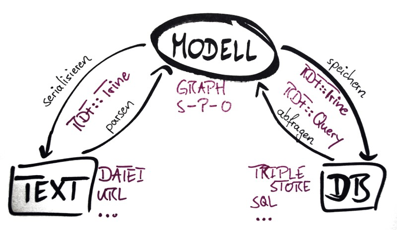

RDF and Perl
Thomas Kappler
2010-06-08

Presenter
Thomas Kappler
http://jugglingbits.wordpress.com
Overview
- RDF
- Working with RDF
- Text
- Databases
What's the Problem?
Scripts
Structure
> 50% of work in Bioinformatics.
Semantic Web?
Ontologies, reasoning, ...
But RDF is just fine by itself!
RDF
The RDF-Graph
| Describing things: | Subject—Property—Object | . |
| Triple | ||
The RDF-Graph
| Describing things: | Subject—Property—Object | . |
| Triple | ||
| Global addressing with URIs. | ||
Linked (Open) Data

Linked (Open) Data
Linked Data ⋍ Web of Data ⋍ Semantic Web
"The Semantic Web isn't just about putting data on the web. It is about making links, so that a person or machine can explore the web of data." (Tim Berners-Lee, http://www.w3.org/DesignIssues/LinkedData.html)
Opening the silos.
Linked (Open) Data
- Use URIs as names for things.
- Use HTTP URIs so that people can look up those names.
- When someone looks up a URI, provide useful information, using the standards (RDF*, SPARQL)
- Include links to other URIs. so that they can discover more things.
(http://www.w3.org/DesignIssues/LinkedData.html)
“Linked Data is the Semantic Web done right” (Tim Berners-Lee)
Benefits
Saves work.
- Data model through explicit semantics.
- Integration via global URLs.
Examples
Bioinformatics: www.uniprot.org
Open Government: www.data.gov
Wikipedia info boxes: dbpedia.org
Not always very "linked" yet—the great challenge.
Working with RDF
Serialization
Several—independent of the graph model.
RDF/XML
Turtle
N3
JSON
Perl-pragmatic: as_hashref
Serialization: RDF/XML
<?xml version='1.0' encoding='UTF-8'?>
<rdf:RDF xmlns="http://purl.uniprot.org/core/"
xmlns:rdf="http://www.w3.org/1999/02/22-rdf-syntax-ns#">
<rdf:Description rdf:about=
"http://purl.uniprot.org/uniprot/P12345">
<rdf:type rdf:resource=
"http://purl.uniprot.org/core/Protein" />
<created>1989-10-01</created>
<enzyme rdf:resource=
"http://purl.uniprot.org/enzyme/2.6.1.1" />
</rdf:Description>
</rdf:RDF>
Serialization: Turtle
@prefix uniprot: <http://purl.uniprot.org/core/> .
@base <http://purl.uniprot.org/> .
<uniprot/P12345>
a uniprot:Protein ;
uniprot:created "1989-10-01" ;
uniprot:enzyme <enzyme/2.6.1.1> .
RDF::Trine
by Gregory Williams.
RDF::Trine::Model
RDF::Trine::Node
RDF::Trine::Parser
RDF::Trine::Serializer
RDF::Trine::Store
RDF::Trine...
Parser and Serializer
use RDF::Trine;
# use RDF::Trine::Store etc.;
my $base_uri = 'http://purl.uniprot.org/core';
my $store = RDF::Trine::Store::Memory->new;
my $model = RDF::Trine::Model->new($store);
# my $model = RDF::Trine::Model->temporary_model;
my $rdf = read_file($file);
my $in_format = 'rdfxml';
my $out_format = 'turtle';
Parser and Serializer
my $parser = RDF::Trine::Parser->new($in_format);
$parser->parse_into_model($base_uri,
$rdf, $model);
say "Read " . $model->size . " statements.";
Parser and Serializer
my $out = RDF::Trine::Serializer->new($out_format);
print $out->serialize_model_to_string($model);
Parser and Serializer
$ perl trine-roundtrip.pl -o turtle p12345.rdf
Read 3 statements.
<http://purl.uniprot.org/uniprot/P12345>
<http://purl.uniprot.org/core/created>
"1989-10-01" ;
<http://purl.uniprot.org/core/enzyme>
<http://purl.uniprot.org/enzyme/2.6.1.1> ;
a <http://purl.uniprot.org/core/Protein> .
as_hashref
my $model_h = $model->as_hashref;
print Dumper(
$model_h->{$uniprot_uri.'/uniprot/P12345'});
as_hashref
$VAR1 = { 'http://purl.uniprot.org/core/created' => [
{
'value' => '1989-10-01',
'type' => 'literal'
}
],
'http://www.w3.org/1999/02/22-rdf-syntax-ns#type' => [
{
'value' => 'http://purl.uniprot.org/core/Protein',
'type' => 'uri'
}
],
Beyond files
Databases- Triple Stores
- 4store
- Virtuoso
- ...
- Anything that can store a graph.
- In-Memory
- SQL
- ...
Query language: SPARQL
SPARQL
Graph Patterns: triples with variables.
When was P12345 created?
select ?date
where {
<uniprot/P12345>
uniprot:created
?date
}
RDF::Query
by... Gregory Williams.
RDF::Query
my $query = new RDF::Query ( $sparql );
my result = $query->execute( $model );
while (my $row = $result->next) {
print $row->{ date }->as_string;
}
RDF::Query
A glimpse of programmatic query generation:
my $object = new_var($prop);
push @patterns,
new_triple($subject, $UNIPROT->$prop, $object);
my $bgp = new
RDF::Query::Algebra::BasicGraphPattern(@patterns);
# ...
Integration
| Perl Code | Graph <-> Hash | Trine::Model |
| Database | Triples relational | Trine::Store |
| Web app | JSON | Trine::{Serialiser,Parser} |
| Providing RDF | Trine::{Serialiser,Parser} |
Summary
- RDF graph: triples of Subject-Predicate-Object, with URIs
- Serialization: RDF/XML, Turtle
- RDF::Trine: Model, Parser, Serializer
- RDF::Query: SPARQL
- Integration: MySQL, JSON, Hashes, RDFa
Summary
RDF with Perl: supported.
Work in progress: Catalyst model, RDF::LinkedData, XS.
The Perl RDF Project: http://www.perlrdf.org
| This presentation: | http://github.com/thomas11/perl-rdf-talk |
| Code: | http://github.com/thomas11/perl-rdf-experiments |
Thanks
Greg Williams, Kjetil Kjernsmo, Toby Inkster, et al.:
The Perl RDF Project
Toshiaki Katayama, DBCLS, CBRC: Biohackathon Tokyo
| This presentation: | http://github.com/thomas11/perl-rdf-talk |
| Code: | http://github.com/thomas11/perl-rdf-experiments |
Self-made RDF: overview
- Namespaces
- Resources
- Triples
- Graph
http://github.com/thomas11/perl-rdf-experiments/
-> make_a_graph.pl
Self-made RDF, 1: Namespaces
my $BASE = 'http://purl.uniprot.org/';
my %namespaces = ();
sub namespace {
my ($section) = @_;
my $ns = $namespaces{$section};
if (not $ns) {
my $url = $BASE . $section . '/';
$ns = RDF::Trine::Namespace->new($url);
$namespaces{$section} = $ns;
}
return $ns;
}
my $ONTOLOGY = namespace('core');
Self-made RDF, 2: Resources
sub new_resource {
my ($name, $section) = @_;
return RDF::Trine::Node::Resource->new(
$name, namespace($section) );
}
sub new_literal {
my ($str) = @_;
return RDF::Trine::Node::Literal->new( $str );
}
Self-made RDF, 3: Statements
sub new_s {
my ($s, $p, $o) = @_;
return RDF::Trine::Statement->new($s, $p, $o);
}
my @stmts = (
new_s($p12345, $ONTOLOGY->created,
new_literal('1989-10-01')),
new_s($p12345, $ONTOLOGY->enzyme,
new_resource('2.6.1.1', 'enzyme')),
new_s($p12345, $rdf->type,
$ONTOLOGY->Protein)
);
Self-made RDF, 4: Model
my $model = RDF::Trine::Model->temporary_model;
$model->add_statement($_) for @stmts;
my $serializer =
RDF::Trine::Serializer::Turtle->new;
print $serializer->
serialize_model_to_string($model), "\n";
Self-made RDF, result
$ perl make_a_graph.pl
<http://purl.uniprot.org/uniprot/P12345>
<http://purl.uniprot.org/core/created>
"1989-10-01" ;
<http://purl.uniprot.org/core/enzyme>
<http://purl.uniprot.org/enzyme/2.6.1.1> ;
a <http://purl.uniprot.org/core/Protein> .